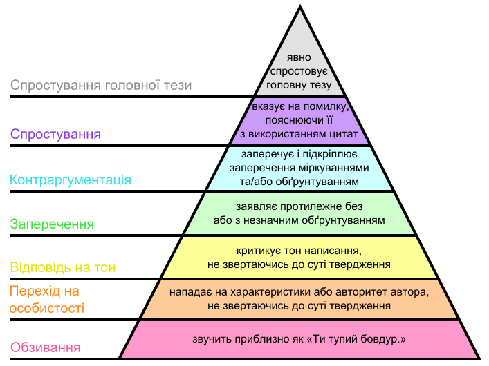

Правила чату D7 Київ¶
Ці правила розповсюджуються на всіх в чаті @kyiv_D7.
Основні цілі: питання-відповіді та провадження конструктивних дискусій по діяльності Київського осередку Д7 та м.Києва.
Прохання:¶
- Мати повагу одне до одного
- Не матюкатися в сторону людей
- Писати максимально стисло і одним повідомленням
- Обговорювати тільки речі, що дотичні до діяльності/компетенцій Київського осередку
- Не відповідати на тези що здаються вам образливими, а краще кликати адмінів
Ви можете:¶
Прочитати ці правила за посиланням: d7-kyiv.github.io/tg-chat-rules.
Повідомити про невідповідні повідомлення, за допомогою команди /admin (/admins) y якості відповіді
🔨 RO_POLL¶
Кожен учасник спільноти може розпочати процес відправки в ReadOnly іншого учасника.
Для запуску використовуйте команду /set_readonly24h_poll. При зборі необхідної кількості голосів, бот відправить учасника в RO на 24 години.
Діяльність адміністраторів¶
🐈 Адміністратори та модератори мають надсилати /w або /warn на невідповідні повідомлення. Після 3 попереджень користувач буде забанений на 1 тиждень.
В разі грубого порушення правил чату, за власною ініціативою чи за проханням учасника чату, адміністрація може відправляти в RO без жодних попереджень. У крайніх випадках, таких як спам, банити.
Будь що, не дотичне до діяльності осередку, та коментарі на кшталт «за що», «доколє», та дуже емоційні реакції мають пересилатися у @kyiv_d7_flood.
Оскарження дій адміністраторів¶
Рішення адміністрації можна оскаржити не раніше ніж через годину після інциденту і, бажано, після прийняття холодного душу (нам важливе як наше, так і ваше емоційне та фізичне здоров'я) шляхом звернення до Голови осередку (в разі відсутності - до виконуючого обов'язки, відповідно до структури осередку).
Термін оскарження дій адміністрації спливає через 3 доби після накладених обмежень.
Інші рекомендації¶
- Якщо сприймати співрозмовника як дуже розумного маньяка, що знає де ви живете, і має відмінний від вашого життєвий досвід, ймовірність порушення правил буде мінімальною.
- Ми тут зібралися заради конструктиву. Почесати язиком, пожалітися на погоду-природу та просто поспілкуватись за життя — це в @kyiv_d7_flood.
- З загально партійними питаннями — в @D7chat.
- Якщо у вас поганий настрій — краще взагалі нічого ніде не писати. Без вашої відповіді прямо зараз (якщо ви не напряму за це відповідаєте), ніхто не помре.
- Враховуйте, що чат читають новачки, що надихаються нашою поведінкою, а також представники інших політичних сил і правоохоронні органи, що можуть використати наш коментар проти партії.
Дякуємо що прочитали правила.
Приклади і роз’яснення для тих хто хоче більше¶
Майже гарантовано RO прилетить за:
- - іди нахуй
- - от же ти й блядіна
- - звідки ти такий довбойоб узявся?
- Особисті нападки
- Громадське або приватне переслідування
- Публікація особистої інформації іншої особи, наприклад фізичні чи електронні адреси, без явного дозволу
- та ін.
Попередження майже гарантовано прилетить за:
- - в мене на районі таких як ти обілечують
- - чи не засланий ти козачок?
- - от думав, чого от у вас морда знайома. І згадав що ту собаку ми вже приспали
- - ти хто і що тут забув?
- Грубий чи деструктивний тролінг
- Образливі / жахливі коментарі
- та ін.
Будь-яке пониження рівня дискусії (див. Діаграму Грема) автоматично трактується як підозріле і таке, що може викликати попередження. Пониження рівня дискусії нижче Заперечення, майже автоматично викличе попередження і/або RO.

Якщо ви зацікавлені у веденні якісної дискусії, але не маєте достатнього досвіду, радимо ознайомитись з Правилами ведення суперечки.
Також, не зайвим буде ознайомитись з тим як правильно ставити запитання [en] і nometa.xyz та як відповідати на запитання з користю для всіх [en].
В разі появи занадто великої кількості повідомлень, адмін перестає бути добрим, починає все уважно читати і роздавати попередження всьому що погано написано. Тому що генерувати купу повідомлень - це неповага до часу людей, що це все читатимуть.
Такий шлях Бене Ґессерит.